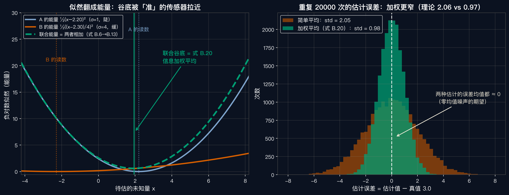

数学工具箱 · 05
概率速通：
噪声的语言
随机变量、期望、方差、似然 —— 附录 B 开篇，给不确定性装上标尺
开场 · INVERSE PROBLEM
视觉是逆问题
原书第 940 页（大意）：图形学是正向问题——给定物体、相机、光照，模拟出图像；计算机视觉通常相反——从图像恢复产生它的场景。
原书第 940 页直译（节选）：除非对可能的误差来源建模，否则不能确信算法合理。
讲者补：这门语言，叫概率。
词汇 ① · RANDOM VARIABLE
随机变量：还没发生的数
讲者解释：把还没发生的测量打包成变量，用分布描述取值与机会。
离散型
骰子 \(X \in \{1,\dots,6\}\)
每个取值各 1/6，概率直接列清单
连续型
噪声电压 \(n \in \mathbb{R}\)
用密度 p(x) 描述；附录 B 的噪声 n 就是它
伏笔：两枚独立骰子点数之和的分布 = 两个分布的卷积——第七集见（讲者补充）。
词汇 ② · EXPECTATION
期望：长期平均
均匀骰子的期望是 3.5——不在任何取值上，但抛一万次，平均值会稳稳收敛到它：大数定律。
对噪声最要紧：零均值——单次随机，长期归零（式 B.7）。
词汇 ③ · VARIANCE
方差：散得多开
经验读法（正态近似）：约 68%（近七成）落在 ±1σ 内、95% 在 ±2σ 内——σ 就是不确定性的标尺。
多维版：协方差矩阵 Σ——各向同性 σ²I（B.9），胖瘦可随方向变（B.10）。
主角 · GAUSSIAN
高斯：误差的默认形状
原书第 945 页：若噪声源于大量微小误差叠加（如热噪声），高斯就是合适模型。
讲者补：独立小扰动叠加，趋向钟形。
正向模型 · MEASUREMENT EQ
一行写尽测量：信号 + 噪声
噪声若不独立——如同乘一个增益——原书：并进状态向量当干扰参数，需要的话再丢。
视角翻转 · LIKELIHOOD
似然：反过问 x
讲者类比：箭已经中靶（观测到手），反推射手站在哪个位置最可能射成这样。
这一步反转，是从概率通向估计的桥——后面每一集都踩它过河。
代入 · GAUSSIAN LIKELIHOOD
高斯噪声：指数上的碗
各向同性（Σ = σ²I）时退化为平方距离 ÷ σ²——式 B.9。前置系数与 x 无关：比似然大小，只看指数上的平方残差。
负对数似然 · ENERGY
取负对数：乘法变加法
眼熟吗？高斯噪声下，这是加权最小二乘（等方差时 = 上一集的最小二乘）——平方和目标是高斯假设下的推论。让 L 最大 = 让 E 最小：最大似然 MLE。
原书第 944 页提醒：分布多峰时要小心——可能得推迟决策、等更多测量（如 §7.3.1 的 CONDENSATION，粒子滤波一例）。
权重 · INFORMATION
方差越小，话语权越大
权重
C = Σ⁻¹ 乘在每个残差上（式 B.13）
残差被自己的噪声倒数缩放
信息
Fisher 信息矩阵
一个测量含多少信息、多强地约束估计（第 943 页）
置信
置信度
字母 C 的来历（第 943 页原话）
原书第 943 页：信息矩阵可奇异甚至为零——缺失的测量不约束解。原书例（§9.1.3）：边测量的沿边方向分量方差无穷大或极大——约束只在垂直方向。
实验 · 两台传感器
真值 3.0：A 读 2.20，B 读 −2.30
A 陡（σ=1）、B 缓（σ=4）；联合能量 = 相加，谷底被准的 A 拉到 1.93（式 B.20）。

实验 · 两万次重复
加权更窄：2.05 对 0.98
直觉：B 的一票只有 A 的 1/16——糊传感器不是扔掉，是降权。理论 \(\hat x = (\sum_i C_i)^{-1}\sum_i C_i \tilde y_i\)（式 B.20）。
「
似然，是观测投给参数 x 的票；
方差的倒数，决定每张票的分量。
—— 本集记忆锚 ｜ 三条暗线贯穿附录 B：噪声零均值、独立连乘、高斯平方惩罚
NEXT · 回书指路
读原书附录 B 开篇第 939–945 页：逆问题 → 式 B.5 测量方程 → 式 B.6–B.9 似然与马氏距离 → 式 B.10 椭球（第 942–943 页）→ 式 B.11–B.13 能量与信息矩阵 → 式 B.20 信息加权平均（第 945 页）
作业把 code/probability_crash_demo.py 里 SIGMA_B 从 4.0 改成 0.5（B 反而更准），重跑：谷底偏向谁？加权平均的方差变成多少？（参考：偏向 B；1/(1+4) = 0.2）
下一集E006 贝叶斯思维：先验、后验与 MAP